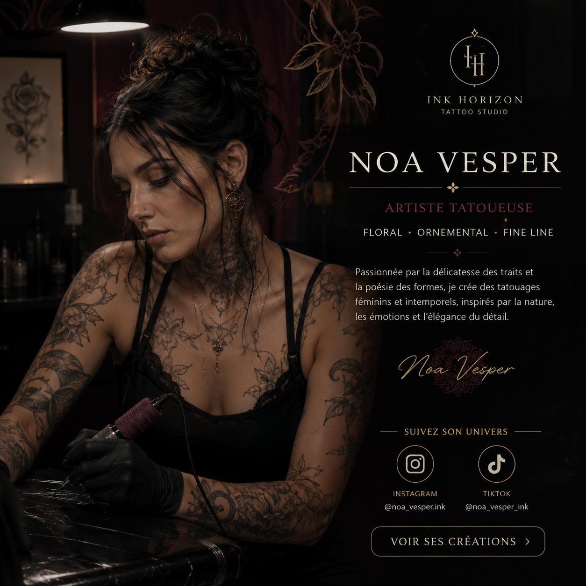
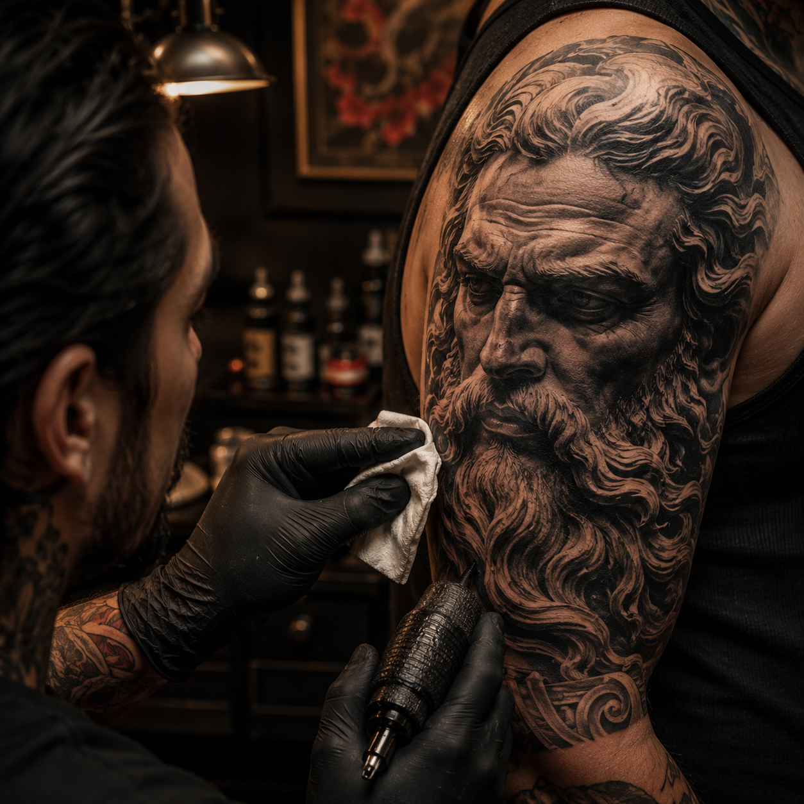
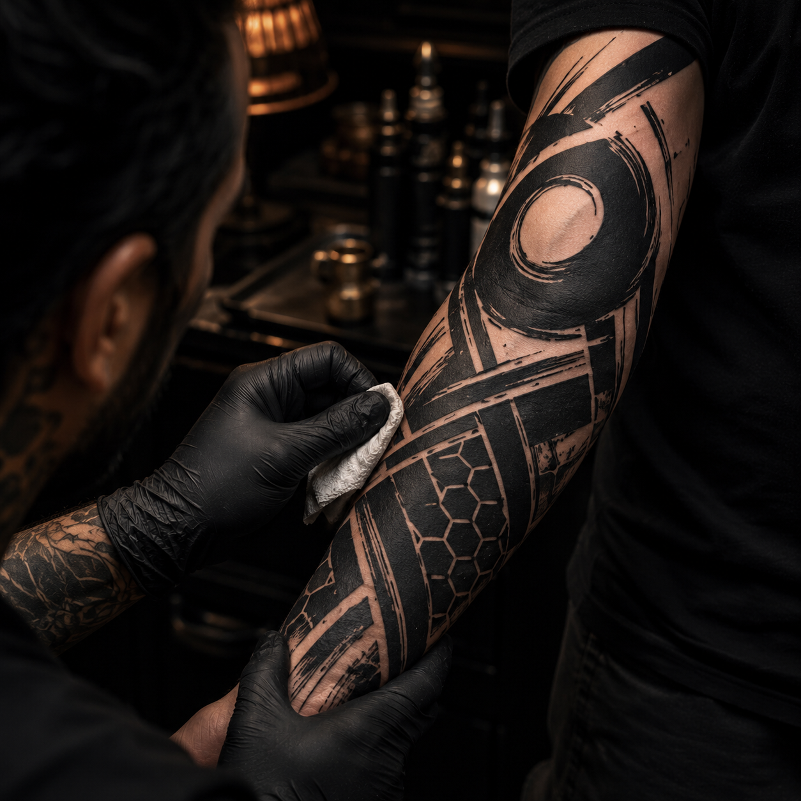
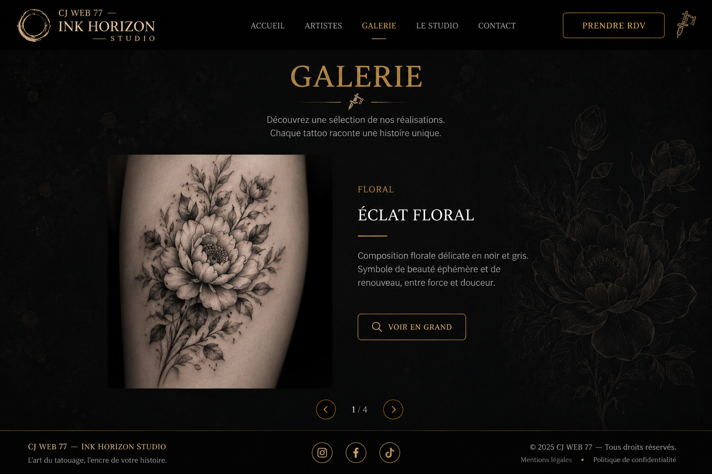
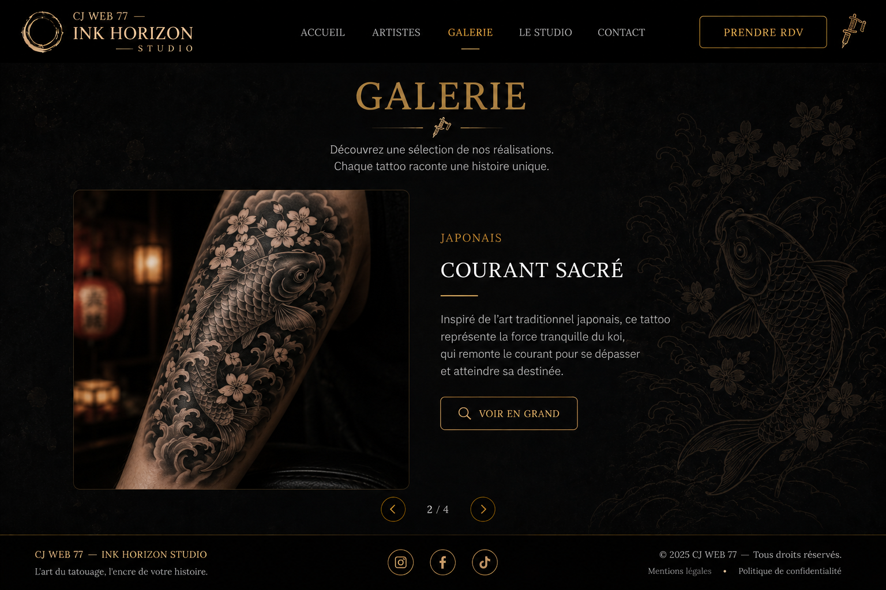
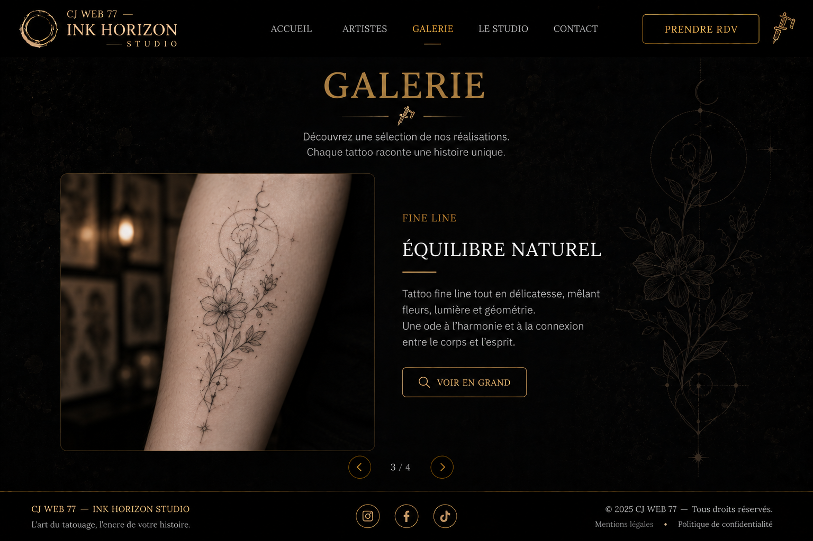
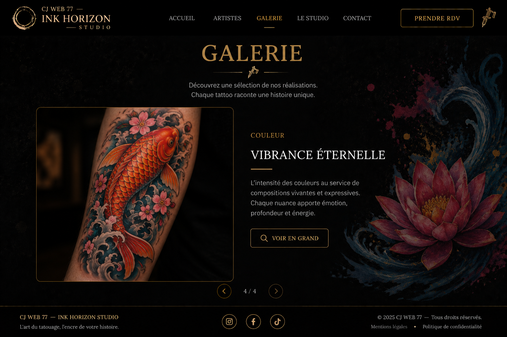

Écoute et accompagnement
Chaque projet commence par une vraie conversation autour de votre histoire.
Projet fictif — Maquette de démonstration
Un studio où chaque tatouage naît d’une rencontre, d’une histoire et d’un univers personnel.
Le studio
Chaque projet commence par une vraie conversation autour de votre histoire.
Des dessins conçus pour vous, avec une identité forte et cohérente.
Des standards élevés pour un cadre sûr, soigné et serein.
Un accompagnement attentif pour préserver chaque création au fil du temps.
Artistes
Réalisme noir et gris · Blackwork
Elle compose des pièces à la fois intenses et élégantes, avec un regard très singulier sur la matière.
Voir ses créations
Floral · Ornemental · Fine line
Son travail mêle délicatesse et structure, avec une approche douce et très graphique.
Voir ses créationsJaponais · Graphique · Couleur
Il aime les compositions narratives, entre mouvement, texture et profondeur chromatique.
Voir ses créationsStyles
Galerie

Réalisme
Portrait noir et gris aux ombrages détaillés.

Blackwork
Composition graphique aux aplats noirs profonds.

Floral
Composition botanique fine et élégante.

Japonais
Pièce dynamique inspirée de l’art japonais.

Fine line
Lignes délicates et composition minimaliste.

Couleur
Création vibrante aux contrastes maîtrisés.
Suivez les artistes pour découvrir leurs nouveaux projets, leurs disponibilités et les coulisses du studio.
Votre projet
Nous échangeons autour de vos envies, de vos références et de votre histoire.
Un premier entretien permet d’affiner le concept et la direction artistique.
Le projet prend forme dans un dessin préparé pour votre corps et votre univers.
La séance se déroule dans un cadre calme, pensé pour le confort et la précision.
Vous repartez avec des recommandations concrètes pour préserver votre tatouage.
Projet fictif
Formulaire fictif — aucun message ne sera envoyé.
Contact
24 rue des Arts
77000 Melun
Téléphone
01 23 45 67 89
E-mail
bonjour@inkhorizon-studio.fr
Horaires
Mardi au samedi
10 h 00 – 19 h 00
Uniquement sur rendez-vous